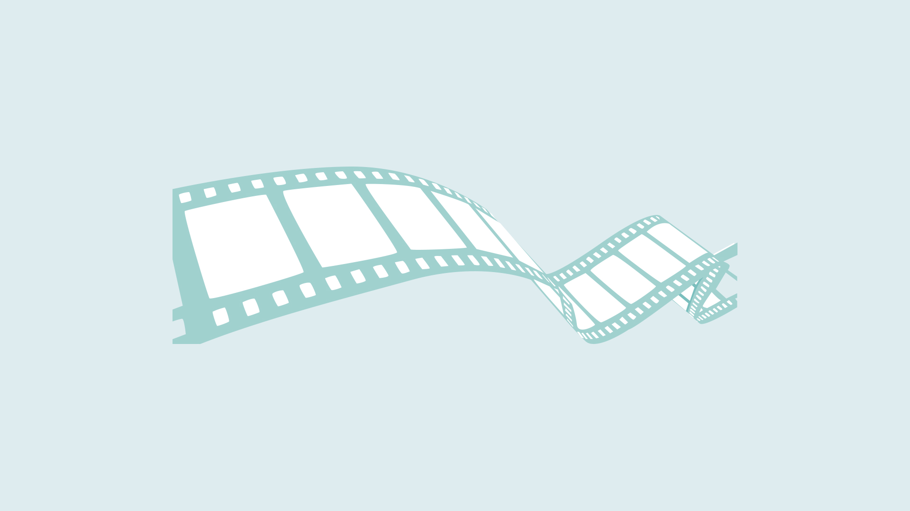

Grundläggande Video
vecka 39 - 41
Under grundläggande video och redesign av hemsida fick vi lära oss hur man arbetar med kameravinklar, hur Premiere Pro fungerar och hur man på bästa sätt får en video som förmedlar det man gärna vill ha sagt. Vi fick arbeta med en riktiga kunder (Sankt Annæ) och (CPH DOX) och på så sätt fick vi en känsla av hur det kan vara ute på arbetsplatser.